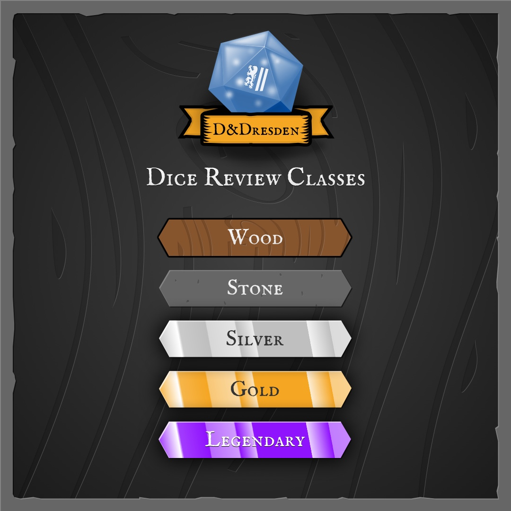

DnDresden Dice Review Scoring System
This page explains how the dice are reviewed and what each score category and class means.
Review Process
The set under review will be used in a gaming setup to test different conditions and I will take them out for foto shoots. Only after they went through these steps will I rate the different categories and assign a final score.
How the score is calculated
The score is a weighted average as I believe some categories are more important than others.
These are the weights I am using:
- Readability: 3
- Playability: 2
- Quality: 1
- Value: 1
- Styling: 0.75
- Appeal: 0.5
Categories
Readability
Readability is such an important factor for actually using the dice in a game that I decided to make this its own category next to playability.
This score determines how well can numbers or other words on the dice be read under different lighting conditions and environments.
Playability
Playabillity considers how well the dice can be used in an actual game or if they are meant as a collectors item. This category tries to answer if the dice are well balanced or made with high precision. Also some materials are quite sensitve and are not meant for heavy duty rolling which would decrease the score for this category.
Quality
Quality describes how well the dice are manufactured and trys to answer questions like:
- Is paint within their molds?
- Are all edges either well rounded or sharp egdged as advertised?
- Are there any scratches out of the box or bubbles within a pull of resin dice?
Value
Value determines if the set is worth the price you are paying. More expensive does not mean more valuable. I am trying to establish a category that gives you a reference to the price and how much the dice might degrade over time.
Styling
Styling aims to incorporate the level of detail or the love that went into designing the dice. Is this set a very creative piece of art or are they not much to look at.
Appeal
A somewhat subjective measure on how much fun I have using the dice for playing, collecting or fotographing. Or simply a measure of how cool I think they are.
Dice Classes
Also, there are classes for the dice. The class itself does not influence the score. Rather it is an indicator for rareness or price.
- Wood: cheap, practical and usable dice sets with no special design.
- Stone: standard dice sets.
- Silver: These dice sets are the upper middle class with some special design or material.
- Gold: Special care is taken to produce these extraordinary dice.
- Legendary: The rarest of them all. Created with exceptional and outstanding creativity or attention to material and production quality.